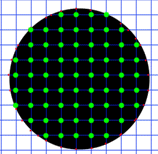

The Marching Cubes Algorithm
By James Sharman
Introduction
Computer rendering techniques have always concentrated on visualising simple primitive structures, more complex structures can then be created by combining these simple 'primitives' to shape a more complex model. Unfortunately the real world has never been very forgiving and some types of data do not translate very easily. The Marching Cubes algorithm was designed by William E. Lorensen and Harvey E. Cline to extract surface information from a 3d field of values. The input data set can represent anything from medical imaging data to geological scans.
This is also a very graphically intensive page you may have to wait a short while for all images to load. While you are waiting you might want to take a quick look at the following related references from the Comp.Graphics.Algorithms Frequently Asked Questions.
- What is the marching cubes algorithm?
- What is the status of the patent on the "marching cubes" algorithm?
The Input Data
For the Marching Cubes algorithm to work we need to provide some basic information, the main question we will need to ask of out data in order to reconstruct the surface is "Is the point at <X,Y,Z> inside or outside of the object?". In order to produce test code we need some sample data and preferably another way of visualising the data for comparison. Appropriate test data has been selected and the graphical representation of its original form is shown bellow. If you want to know more about the actual test data and the reason for its selection then read the section on "The Test Data" a the end of the document.
The Basic Principle
The basic principle behind the marching cubes algorithm is to subdivide space into a series of small cubes. The algorithm then instructs us to 'march' through each of the cubes testing the corner points and replacing the cube with an appropriate set of polygons. The sum total of all polygons generated will be a surface that approximates the one the data set describes.
To explain the algorithm let us first look at a 2 dimensional equivalent. The diagram bellow on the left shows a grid of squares equivalent to the cubes from the 3d algorithm (many people refer to the cubes as 'cells' or voxels). A solid circle has been drawn which is the shape we are going to approximate using lines (instead of polygons).
The first step is to calculate the corners that are inside the shape (represented by the green dots). We can now insert some vertices, since we know which points are inside and which are outside we can guess that a vertex should be positioned approximately halfway between an inside corner and any outside corners that are connected by the edge of a cell. The central diagram bellow shows the discussed vertices as small red dots and the diagram on the right shows the matching surface formed by joining the vertices with lines.
We can see that the resulting surface has given us a fairly decent representation of the circle, unfortunately we can also see that the shape suffers from some kind of spatial aliasing, we shall look at ways of dealing with this later.
Working In 3D
Now we understand the basic principle we can go on to look at how the principle can be made to work in 3 dimensions. We are now of course dealing with cube's that have 8 corners and therefore a potential 256 possible combinations of corner status. However to simplify the algorithm we can reduce the complexity by taking into account cell combinations that duplicate under the following conditions.
- Rotation by any degree over any of the 3 primary axis
- Mirroring the shape across any of the 3 primary axis
- Inverting the state of all corners and flipping the normals of the relating polygons.
Taking this into account we can resolve the original 256 combinations of cell state down to a total of 15 combinations, with this number it is then easy to create predefined polygon sets for making the appropriate surface approximation. The image bellow gives an example data set covering all of the 15 possible combinations. The blue spheres denote corners that have tested as inside the shape and the green arrows denote the surface normals of the relevant triangles.
Implementation
We now have all of the basic information we need to reconstruct the surface apart from the sample density. The Sample density is essentially the number of cubes along each axis we intend to divide the volume into, this relates directly to the output quality. Since our test object occupies a roughly cube shaped volume of space this will be the same dumber of divisions along each axis. Bellow are some sample outputs from the algorithm at 12,20 and 50 subdivisions, this is equal to 1728, 8000 and 125000 cells respectively.
Analysis Of The Results
Immediately we can see the approximate shape of our test shape even at the lowest sampling frequency, at the top end we can see quite a bit of detail. Unfortunately we are also seeing the same kind of spatial aliasing as we saw in the 2D example, however this has shown us that the algorithm is working properly. The results are not however as good as we would like, it is now time to look beyond the basic algorithm at ways to improve the quality of the reconstructed surface.
Possible Methods For Improvement
We could at any stage apply conventional smoothing to the mesh, this would of course improve the look but what is more important at this stage is to improve the accuracy of the surface. If we look back at our original 2D test we can see that many of the assumed vertices are a significant distance from the actual surface. Since we know that all the vertices are on an edge between a corner known to be inside the shape and a corner known to be outside the shape we can move the vertex along this edge to the actual surface point. This extension to the algorithm is referred to as "Adaptive Marching Cubes". The Diagrams bellow show our 2D example with the new vertex positions and with the new surface, a far better fit.
|  |  |
Implementation Considerations
There are two main methods we can use to calculate the new vertex positions for our 3D mesh, we can either do it mathematically or by successive approximation. We can only perform this operation mathematically if we have at least some understanding of the structure we are representing, if we can only determine if a point lies inside or outside the shape this is not going to help. If however we have a good understanding of the maths involved we can directly calculate the new vertex position, this is normally the case when the structure is represented as a field of values where the surface is defined by a threshold, if for example, given corner on our circle we can return the distance from the centre, the threshold would then be the radios of the circle. It is not necessary to go into the maths necessary to do this since it can differ from model to model, for a more generic approach consider the use of successive approximation.
Successive approximation has the advantage that we don't need to no anything else about the model, we still only need to be able to ask the question is point <x,y,z> inside or outside of the shape? Since we know that one of the ends of the edge is inside the shape and one is outside we can check an additional point between those two, we should now have a region half the size in which we know the surface resides. Repeating this process recursively only a few more times gives a very accurate result.
The two images bellow show the output of the algorithm with the adaptive extensions, as you can see the reconstructed surface is a lot more convincing and follows the contours of the original shape far better.

Conclusion
As we can see the adaptive algorithm has produced a very close approximation to the original surface, if we were to add conventional smoothing to this polygons we would have an image that is near perfect at only 20 subdivisions. There are other ways of extending this algorithm that will be discussed in later documents although the marching cubes algorithm does suffer from its fixed subdivision of space. In later documents we will also go on to look at methods that involve non regular spatial subdivisions to improve the accuracy of the resulting image without such high polygon counts.
The Test Data
For those who are interested this section describes what the test data was along with the platform I used to draw the results. It was important to be able to produce direct comparisons between the original data and the results in order to establish the accuracy of the algorithm (and the robustness of the test implementation). The Freeware raytracing package POVRAY includes primitives to ray-trace 'Blobs', any given blob can be defined by the expression:
The surface of the shape is defined as where the sum total of power influence exerted by all the blobs in the shape is equal to a given threshold value. If you want to know more about blobs then visit www.povray.org and download the source code, then examine the file blob.c (there are some good explanations in the comments). The main benefits of using POVRAY blobs as the test data was that it was very easy to produce a comparatively complex shape and we had a ready made platform for producing a near perfect visualisation of the original data. The various images testing different configurations were also rendered using POVRAY (but this time with the triangle primitive), this allowed us to guarantee that the images were drawn under exactly the same conditions (Scale,Surface Properties,Camera model and Illumination) with only the actual surface changing. The end result was a perfect set of images for comparing the output of the algorithm.
Further Reading
"Marching Cubes: A High Resolution 3D
Surface Construction Algorithm",
William E. Lorensen and Harvey E. Cline,
Computer Graphics (Proceedings of SIGGRAPH '87), Vol. 21, No.
4, pp. 163-169.